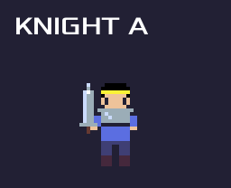
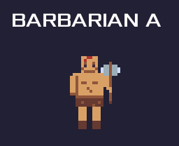
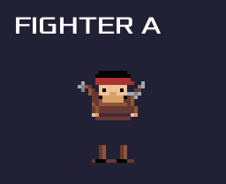
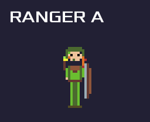
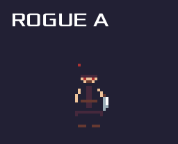
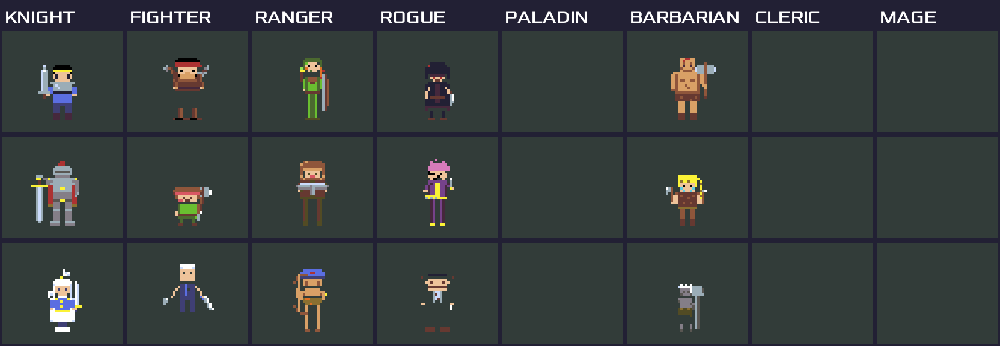

KNIGHT7

Knight A のリール: 主要クリップ一巡（Idle/歩き 3 方向/反転右向き/Attack/UseItem/Damage/Death→白骨→フェード消滅）BARBARIAN7

BARBARIAN A 質量で叩き割る禿頭の大斧使い のリール: 主要クリップ一巡（Idle/歩き 3 方向/反転右向き/Attack/UseItem/Damage/Death→白骨→フェード消滅）FIGHTER7

FIGHTER A 歴戦の傭兵 のリール: 主要クリップ一巡（Idle/歩き 3 方向/反転右向き/Attack/UseItem/Damage/Death→白骨→フェード消滅）RANGER7

RANGER A 静かなる狩人 のリール: 主要クリップ一巡（Idle/歩き 3 方向/反転右向き/Attack/UseItem/Damage/Death→白骨→フェード消滅）ROGUE7

ROGUE A 影より来たる短剣 のリール: 主要クリップ一巡（Idle/歩き 3 方向/反転右向き/Attack/UseItem/Damage/Death→白骨→フェード消滅）Roster2

全キャラ IdleDown frame0 の 8 職 × 3 案一覧（空枠 = 未登録）